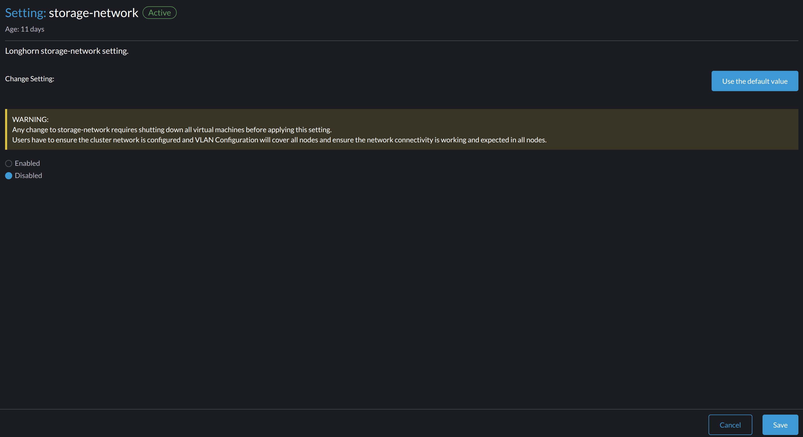

|
この文書は自動機械翻訳技術を使用して翻訳されています。 正確な翻訳を提供するように努めておりますが、翻訳された内容の完全性、正確性、信頼性については一切保証いたしません。 相違がある場合は、元の英語版 英語 が優先され、正式なテキストとなります。 |
ストレージネットワーク
SUSE VirtualizationはSUSE Storageを使用して、仮想マシンやポッドのためのブロックデバイスボリュームを提供します。SUSE Storageのレプリケーショントラフィックを`mgmt`（ビルトインのクラスターネットワーク）や他のクラスター全体のワークロードから隔離したい場合は、より良いネットワーク帯域幅とパフォーマンスのために専用のストレージネットワークを使用できます。
詳細については、SUSE Storageのドキュメントにある ストレージネットワークを参照してください。
|
SUSE Storageの設定を直接構成することは避けてください。そうしないと、予期しないまたは望ましくないシステムの動作が発生する可能性があります。 |
前提条件
ストレージネットワークの構成を開始する前に、以下の要件が満たされていることを確認してください：
-
ネットワークスイッチが正しく構成されており、ストレージネットワークに専用のVLAN IDが割り当てられています。
-
クラスターネットワークとVLANネットワークが正しく構成されています。両方のネットワークがすべてのノードをカバーし、アクセス可能であることを確認してください。
-
ストレージネットワークのIP範囲には、以下の特性があります：
-
IPv4 CIDR形式を使用します。
-
Kubernetesクラスターのネットワークと衝突したり重複したりしません。
以下のアドレスは予約されています：
10.42.0.0/16,10.43.0.0/16,10.52.0.0/16、および`10.53.0.0/16`。 -
クラスターの要件を満たしています。
必要なIPアドレスの数は、以下の式を使用して計算されます：
Required number of IPs = (Number of nodes * 2) + (Number of disks * 2) + Number of images to be downloaded or uploaded例:クラスターに5つのノードがあり、それぞれ2つのディスクがあり、同時に10のイメージをアップロードする場合、IP範囲は`/26`以上である必要があります（計算：（5 x 2） + （5 x 2） + 10 = 30）。
-
SUSE Storageのポッドとストレージネットワークが使用してはならないIPアドレスを除外します。例えば、RWXボリューム、ゲートウェイ、その他のコンポーネントのために予約されたアドレスなどです。
-
-
Whereabouts CNIが正しくインストールされています。
ippools.whereabouts.cni.cncf.ioCRDがクラスターに存在するかどうかを、コマンド`kubectl get crd ippools.whereabouts.cni.cncf.io`を使用して確認できます。空の文字列が返された場合は、以下のコマンドを使用して このディレクトリにCRDを追加してください：
kubectl apply -f https://raw.githubusercontent.com/harvester/harvester/v1.1.0/deploy/charts/harvester/dependency_charts/whereabouts/crds/whereabouts.cni.cncf.io_ippools.yaml kubectl apply -f https://raw.githubusercontent.com/harvester/harvester/v1.1.0/deploy/charts/harvester/dependency_charts/whereabouts/crds/whereabouts.cni.cncf.io_overlappingrangeipreservations.yamlWhereabouts CNIが、特定の アップグレードシナリオで正しくインストールされていません。
-
すべての仮想マシンは停止しています。
コマンド`kubectl get -A vmi`を使用して仮想マシンの状態を確認できます。これは空の文字列を返すはずです。
SUSE Virtualizationは、SUSE Virtualization UIを使用して停止する仮想マシンに優雅なシャットダウン信号を送信します。ただし、ワークロードは中断され、ストレージネットワークの設定が正常に適用されたことを確認した後に手動で仮想マシンを起動するまで利用できません。
-
SUSE Storageボリュームに接続されているすべてのポッドは停止しています。
-
進行中のすべてのイメージのアップロードとダウンロードは、完了するか削除されます。
SUSE Storageレプリケーショントラフィックのルーティング
SUSE Storageレプリケーショントラフィックのルーティングは、仮想マシンのVLANトラフィックとSUSE Storageストレージネットワークが同じ物理インターフェースを共有しているか、異なるものを使用しているかに依存します。
-
同じ物理インターフェース：次の例では、`eth2`と`eth3`が仮想マシンのVLANトラフィックとSUSE Storageストレージネットワークに使用されています。赤い線は、SUSE Storageが`eth3`を通じてレプリケーショントラフィックを送信していることを示しています。

クラスターネットワークとVLANネットワークの設定には、`eth2`と`eth3`を含める必要があります。
-
異なる物理インターフェース：次の例では、`eth2`と`eth3`が仮想マシンのVLANトラフィックに使用され、`eth4`と`eth5`がSUSE Storageストレージネットワークに使用されています。赤い線は、SUSE Storageが`eth4`を通じてレプリケーショントラフィックを送信していることを示しています。

クラスターネットワークとVLANネットワークの設定には、`eth4`と`eth5`を含める必要があります。
`storage-network`設定
storage-network設定では、分離が必要な場合にクラスター内ストレージトラフィックを隔離するために使用されるネットワークを構成できます。
UIまたはCLIを使用してストレージネットワークを有効または無効にできます。設定が有効になっている場合、特定のフィールドを構成してMultus NetworkAttachmentDefinition CRDを構築する必要があります。
storage-network 設定が適用されると、SUSE Virtualization は次のアクションを実行します：
-
SUSE Storage ボリューム、Prometheus、Grafana、Alertmanager、および VM インポートコントローラーに関連するすべてのポッドを停止します。
-
新しい
NetworkAttachmentDefinitionを作成し、SUSE Storage ストレージネットワーク設定を更新します。 -
新しいネットワーク設定を適用するために、すべての
instance-managerおよびbacking-image-managerポッドを再起動します。
設定手順
-
UI
-
CLI
|
SUSE Virtualization UI を使用して |
==== ストレージネットワークを有効にします。
-
高度な → 設定 → ストレージネットワーク に移動します。
-
有効 を選択します。
-
VLAN ID、クラスター ネットワーク、IP 範囲、および 除外 フィールドを構成して、Multus
NetworkAttachmentDefinitionCRD を構築します。 -
［保存］をクリックします。

==== ストレージネットワークを無効にします。
-
高度な → 設定 → ストレージネットワーク に移動します。
-
無効 を選択します。
-
［保存］をクリックします。
ストレージネットワークが無効になると、SUSE Storage はストレージ関連の操作にポッドネットワークを使用し始めます。

次のコマンドを使用して storage-network 設定 を設定できます。
kubectl edit settings.harvesterhci.io storage-networkストレージネットワークは、次の状況で自動的に有効になります：
-
valueフィールドに有効な JSON 文字列が含まれています。apiVersion: harvesterhci.io/v1beta1 kind: Setting metadata: name: storage-network value: '{"vlan":100,"clusterNetwork":"storage","range":"192.168.0.0/24", "exclude":["192.168.0.100/32"]}' -
valueフィールドは空です。apiVersion: harvesterhci.io/v1beta1 kind: Setting metadata: name: storage-network value: ''
value フィールドを削除すると、ストレージネットワークは無効になります。
apiVersion: harvesterhci.io/v1beta1
kind: Setting
metadata:
name: storage-network|
SUSE Virtualization は、JSON 文字列内の余分な無視できる文字を異なる設定として考慮します。 |
ストレージネットワークのMTUを変更します
ストレージネットワークが接続されたネットワーク構成のMTUを変更するを参照してください。
設定後の手順
|
SUSE Virtualizationは仮想マシンを自動的に起動しません。構成が正しく適用されていることを確認し、必要に応じて仮想マシンを起動する必要があります。 |
-
次のコマンドを使用して、`storage-network`設定のステータスが`True`であり、タイプが`configured`であることを確認してください。
kubectl get settings.harvesterhci.io storage-network -o yaml例:
apiVersion: harvesterhci.io/v1beta1 kind: Setting metadata: annotations: storage-network.settings.harvesterhci.io/hash: da39a3ee5e6b4b0d3255bfef95601890afd80709 storage-network.settings.harvesterhci.io/net-attach-def: "" storage-network.settings.harvesterhci.io/old-net-attach-def: "" creationTimestamp: "2022-10-13T06:36:39Z" generation: 51 name: storage-network resourceVersion: "154638" uid: 2233ad63-ee52-45f6-a79c-147e48fc88db status: conditions: - lastUpdateTime: "2022-10-13T13:05:17Z" reason: Completed status: "True" type: configured -
SUSE Storageポッド（
instance-manager`と`backing-image-manager）が準備完了であり、それらのネットワークが正しく構成されていることを確認してください。次のコマンドを使用して各ポッドを検査できます。
kubectl -n longhorn-system describe pod <pod-name>以下のようなエラーは、ストレージネットワークが利用可能なIPアドレスを使い果たしたことを示しています。ストレージネットワークを十分なIP範囲で再構成する必要があります。
Events: Type Reason Age From Message ---- ------ ---- ---- ------- .... Warning FailedCreatePodSandBox 2m58s kubelet Failed to create pod sandbox: rpc error: code = Unknown desc = failed to setup network for sandbox "04e9bc160c4f1da612e2bb52dadc86702817ac557e641a3b07b7c4a340c9fc48": plugin type="multus" name="multus-cni-network" failed (add): [longhorn-system/backing-image-ds-default-image-lxq7r/7d6995ee-60a6-4f67-b9ea-246a73a4df54:storagenetwork-sdfg8]: error adding container to network "storagenetwork-sdfg8": error at storage engine: Could not allocate IP in range: ip: 172.16.0.1 / - 172.16.0.6 / range: net.IPNet{IP:net.IP{0xac, 0x10, 0x0, 0x0}, Mask:net.IPMask{0xff, 0xff, 0xff, 0xf8}} ....ストレージネットワークが利用可能なIPアドレスを使い果たした場合、画像をアップロードまたはダウンロードする際に同様のエラーが発生する可能性があります。影響を受けた画像を削除し、ストレージネットワークを十分なIP範囲で再構成する必要があります。
-
`k8s.v1.cni.cncf.io/network-status`アノテーションに`lhnet1`という名前のインターフェースが存在することを確認してください。このインターフェースのIPアドレスは、指定されたIP範囲内である必要があります。
次のコマンドを使用してSUSE Storage `instance-manager`ポッドのリストを取得できます。
kubectl get pods -n longhorn-system -l longhorn.io/component=instance-manager -o yaml例:
apiVersion: v1 kind: Pod metadata: annotations: cni.projectcalico.org/containerID: 2518b0696f6635896645b5546417447843e14208525d3c19d7ec6d7296cc13cd cni.projectcalico.org/podIP: 10.52.2.122/32 cni.projectcalico.org/podIPs: 10.52.2.122/32 k8s.v1.cni.cncf.io/network-status: |- [{ "name": "k8s-pod-network", "ips": [ "10.52.2.122" ], "default": true, "dns": {} },{ "name": "harvester-system/storagenetwork-95bj4", "interface": "lhnet1", "ips": [ "192.168.0.3" ], "mac": "2e:51:e6:31:96:40", "dns": {} }] k8s.v1.cni.cncf.io/networks: '[{"namespace": "harvester-system", "name": "storagenetwork-95bj4", "interface": "lhnet1"}]' k8s.v1.cni.cncf.io/networks-status: |- [{ "name": "k8s-pod-network", "ips": [ "10.52.2.122" ], "default": true, "dns": {} },{ "name": "harvester-system/storagenetwork-95bj4", "interface": "lhnet1", "ips": [ "192.168.0.3" ], "mac": "2e:51:e6:31:96:40", "dns": {} }] kubernetes.io/psp: global-unrestricted-psp longhorn.io/last-applied-tolerations: '[{"key":"kubevirt.io/drain","operator":"Exists","effect":"NoSchedule"}]' Omitted... -
SUSE Storageポッド間の通信をテストします。
ストレージネットワークはSUSE Storageポッド間の内部通信専用であり、高いパフォーマンスと信頼性を実現しています。ただし、ストレージネットワークは接続性のために外部ネットワークインフラストラクチャに依存しています（VM VLANネットワークが機能するのと同様です）。外部ネットワークが正しく接続されて設定されていない場合、次の問題が発生する可能性があります：
-
新しく作成された仮想マシンは`Not-Ready`状態で固まります。
-
`longhorn-manager`ポッドのログにはエラーメッセージが含まれています。
例:
longhorn-manager-j6dhh/longhorn-manager.log:2024-03-20T16:25:24.662251001Z time="2024-03-20T16:25:24Z" level=error msg="Failed rebuilding of replica 10.0.16.26:10000" controller=longhorn-engine engine=pvc-0a151c59-ffa9-4938-9c86-59ebb296bc88-e-c2a7fe77 error="proxyServer=10.52.6.33:8501 destination=10.0.16.23:10000: failed to add replica tcp://10.0.16.26:10000 for volume: rpc error: code = Unknown desc = failed to get replica 10.0.16.26:10000: rpc error: code = Unavailable desc = all SubConns are in TransientFailure, latest connection error: connection error: desc = \"transport: Error while dialing dial tcp 10.0.16.26:10000: connect: no route to host\"" node=oml-harvester-9 volume=pvc-0a151c59-ffa9-4938-9c86-59ebb296bc88SUSE Storageポッド間の通信をテストするには、次の手順を実行してください：
-
前のステップで特定された各インスタンスマネージャーポッドのストレージネットワークIPを取得します（ノードごとに1つ）。
例:
instance-manager-43f1624d14076e1d95cd72371f0316e2 storage network IP: 10.0.16.8 instance-manager-ba38771e483008ce61249acf9948322f storage network IP: 10.0.16.14 -
それらのポッドにログインします。
コマンド`ip addr`を実行すると、出力にはポッドのアノテーションにあるIPと同じIPが含まれます。次の例では、1つのIPはポッドネットワーク用で、もう1つはストレージネットワーク用です。
例:
$ kubectl exec -i -t -n longhorn-system instance-manager-ba38771e483008ce61249acf9948322f -- /bin/sh $ ip addr 1: lo: <LOOPBACK,UP,LOWER_UP> mtu 65536 qdisc noqueue state UNKNOWN group default qlen 1000 link/loopback 00:00:00:00:00:00 brd 00:00:00:00:00:00 inet 127.0.0.1/8 scope host lo ... 3: eth0@if2277: <BROADCAST,MULTICAST,UP,LOWER_UP> mtu 1450 qdisc noqueue state UP group default // pod network link link/ether 0e:7c:d6:77:44:72 brd ff:ff:ff:ff:ff:ff link-netnsid 0 inet 10.52.6.146/32 scope global eth0 ... 4: lhnet1@if2278: <BROADCAST,MULTICAST,UP,LOWER_UP> mtu 1500 qdisc noqueue state UP group default // storage network link, note the MTU value link/ether fe:92:4f:fb:dd:20 brd ff:ff:ff:ff:ff:ff link-netnsid 0 inet 10.0.16.14/20 brd 10.0.31.255 scope global lhnet1 ... $ ip route default via 169.254.1.1 dev eth0 10.0.16.0/20 dev lhnet1 proto kernel scope link src 10.0.16.14 169.254.1.1 dev eth0 scope linkストレージネットワークリンクは、構成されたMTU値に関係なく、常に接続されたクラスタネットワークのMTU値を継承します。
-
1つのポッドでシンプルなHTTPサーバーを起動します。
このHTTPサーバーをストレージネットワークIPに明示的にバインドする必要があります。
例:
$ python3 -m http.server 8000 --bind 10.0.16.14 (replace with your pod storage network IP) -
別のポッドでHTTPサーバーをテストします。
例:
From instance-manager-43f1624d14076e1d95cd72371f0316e2 (IP 10.0.16.8) $ curl http://10.0.16.14:8000ストレージネットワークが正常に機能している場合、`curl`コマンドはHTTPサーバー上のファイルのリストを返します。
-
（オプション）問題をトラブルシューティングします。
ストレージネットワークは、次のような外部ネットワークの問題により、正常に機能しない場合があります：
-
ストレージネットワークに関連付けられた物理NIC（SUSE Virtualizationノードにインストールされている）が、外部スイッチの同じVLANに追加されていません。
-
外部スイッチが正しく接続され、設定されていません。
-
-
-
設定が確認されたら、必要に応じて仮想マシンを手動で起動できます。
ベストプラクティス
-
ストレージネットワークのIP範囲を設定する際には、割り当てられたIPアドレスがクラスタの将来のニーズに対応できることを確認してください。これは重要です。なぜなら、SUSE Storageポッド（
instance-manager`および`backing-image-manager）は、ストレージネットワークが設定された後に新しいノードがクラスタに追加されたり、ノードにディスクが追加されたりすると、必要なIPの数が割り当てられたIPを超えると停止するからです。問題を解決するには、正しいIP範囲でストレージネットワークを再設定する必要があります。SUSE Storageポッドは次のようにストレージネットワークを使用します：
-
instance-managerポッド:インスタンスマネージャーのコンポーネントは SUSE Storagev1.5.0 に統合されました。各ノードには1つのIPアドレスが必要です。アップグレード中は、古いバージョンと新しいバージョンの両方のポッドが存在し、アップグレードが完了すると古いバージョンは削除されます。 -
backing-image-dsポッド:これらのポッドは、バックイメージのデータソースをオンザフライでアップロードおよびダウンロードを処理し、イメージのアップロードとダウンロードが完了すると削除されます。 -
backing-image-managerポッド:各ディスクには1つのIPアドレスが必要です。アップグレード中は、古いバージョンと新しいバージョンの両方のポッドが存在し、アップグレードが完了すると古いバージョンが削除されます。
-
-
ストレージネットワークを非`mgmt`のクラスタネットワークで設定し、KubernetesコントロールプレーンのトラフィックからSUSE Storageのレプリケーショントラフィックを完全に分離してください。`mgmt`を使用することは可能ですが、コントロールプレーンネットワークのパフォーマンスに対するリソースや帯域幅の競合による悪影響があるため、推奨されません。クラスタにNIC関連の制約があり、かつトラフィックを完全に分離できる場合にのみ`mgmt`を使用してください。